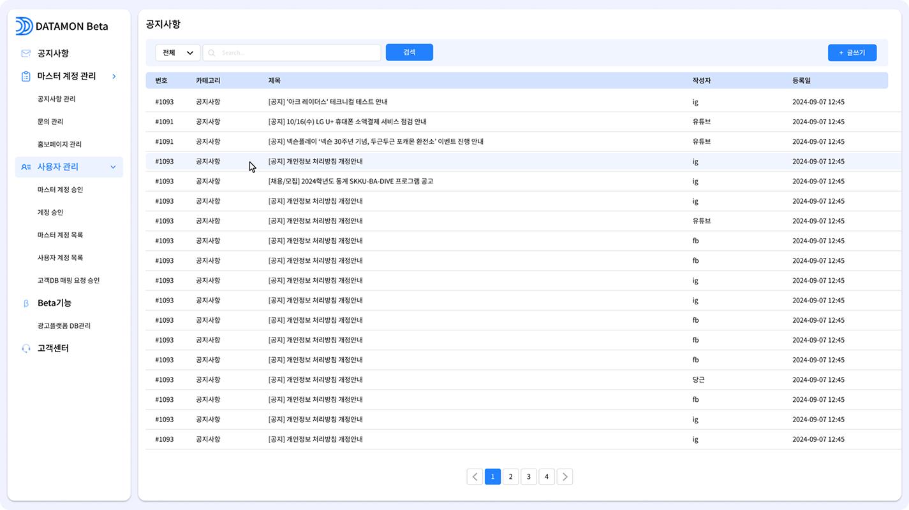
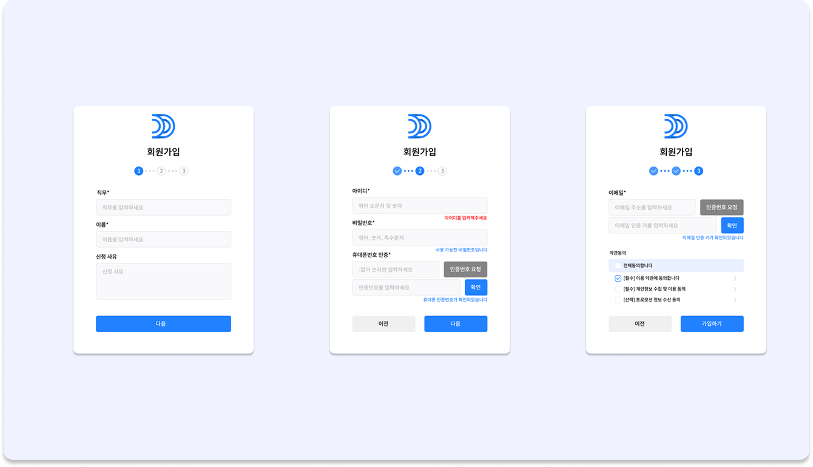
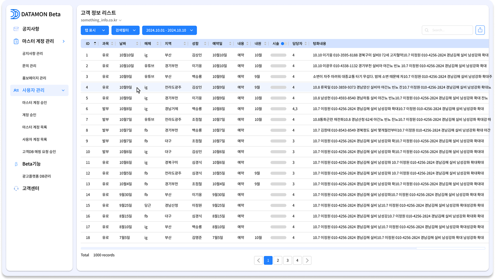
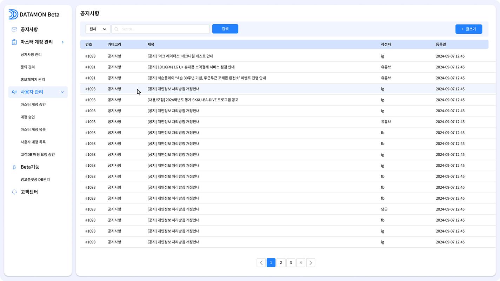
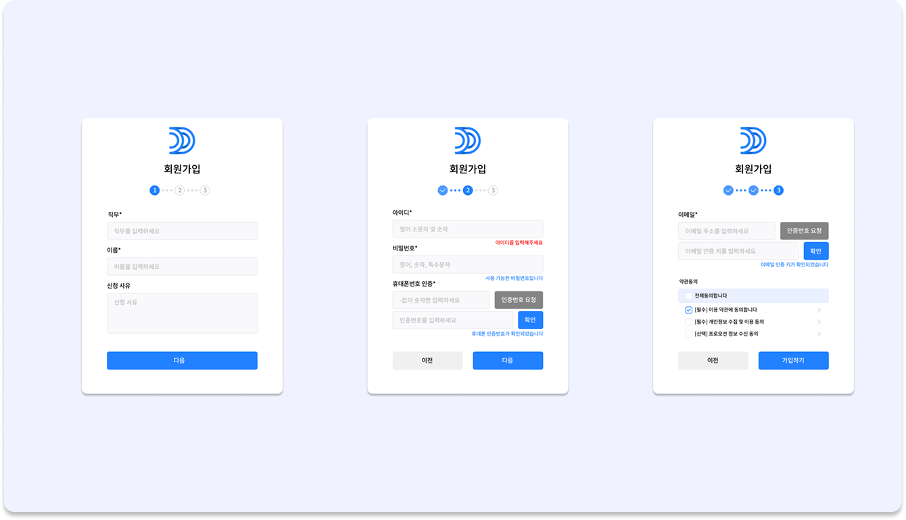
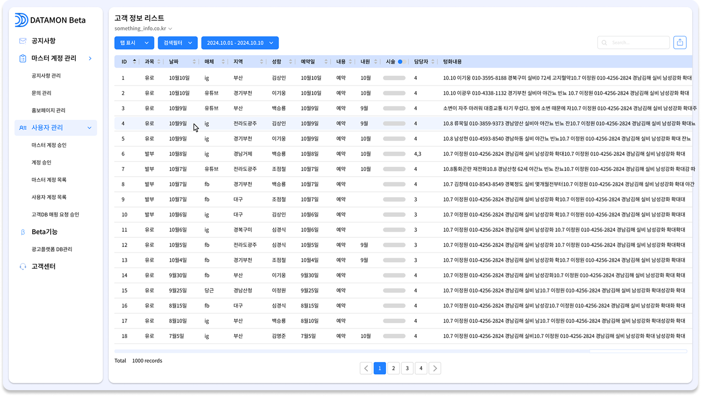

Datamon
Data extraction, analysis, visualization, quality control, ML modeling, data clustering, etc. Provide data environment construction solutions.
Building a data environment
- Data Quality Management
- UI/UX optimization
- Data analysis
- Data Clustering
- ML modeling
- Data visualization
- Data extraction
Design Highlights
Clean, minimal dashboard design in warm blues and whites. Soft blue accents, clear typography, spacious layout. Modern, calm, and user-friendly.
Links
Gallery
 





×